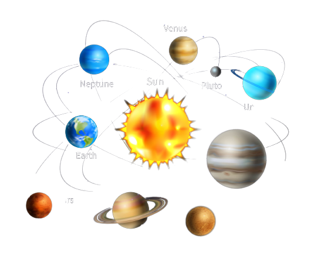
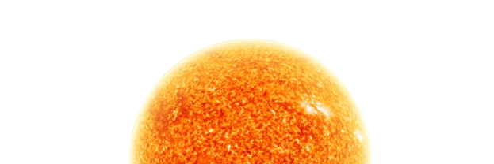

|  | HOME | PRÓXIMAS MISSÕES | DATAS ASTRONÔMICAS | LOGIN |
O Sol é a estrela central do Sistema Solar e é uma das cerca de 100 bilhões de estrelas da Via Láctea. É uma esfera quase perfeita de gás ionizado composto principalmente de hidrogênio e hélio. Sua temperatura no núcleo pode chegar a cerca de 15 milhões de graus Celsius, onde ocorrem reações de fusão nuclear que produzem energia. O Sol é a fonte de energia para a vida na Terra, fornecendo luz e calor através da radiação eletromagnética. Ele também é responsável por fenômenos como as auroras boreais e a atividade solar, que podem afetar a comunicação via satélite e as redes elétricas na Terra. A atividade solar varia em ciclos de aproximadamente 11 anos, com períodos de alta atividade conhecidos como máximos solares e períodos de baixa atividade conhecidos como mínimos solares. O estudo do Sol é importante não apenas para entender seu papel na Terra, mas também para compreender a evolução das estrelas e do universo em geral.
